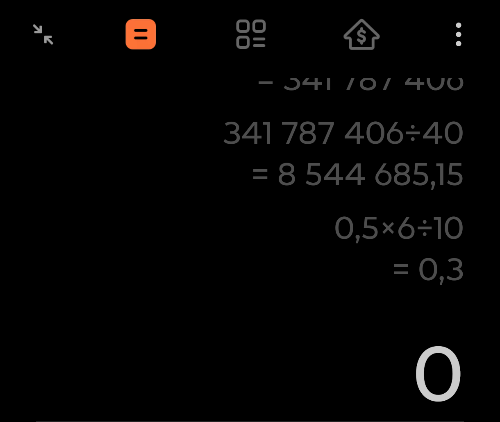
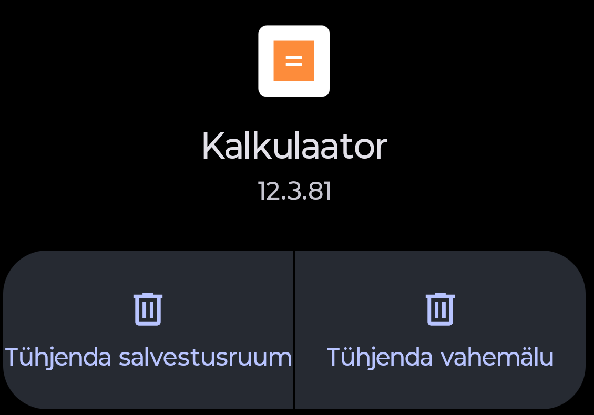

Kalkulaator jättis tänased tehted ajaloost välja
Kasutaja nägi vanu tehteid, kuid 5. novembril tehtud arvutused puudusid. Ta kinnitas, et kasutas sama rakendust ja vajutas võrdusmärki.
- Tehti arvutus samas kalkulaatoris ning vajutati =.
- Kontrolliti ajalugu: tänaseid tehteid polnud, vanad olid alles.
- Kontrolliti rakenduse infot: Kalkulaator 12.3.81, pakett
com.miui.calculator; vestluses tuvastati Motorola Edge 60 ja Android 16.
Salvestusruumi ja vahemälu tühjendamise nuppe ei kasutatud. Koostati veakirjeldus; tootjale kohaletoimetamise kinnitust ei leitud. Täpset ajaloo avamise menüüteed ei õnnestunud allikast kinnitada. Põhjus ja parandus jäid teadmata.

